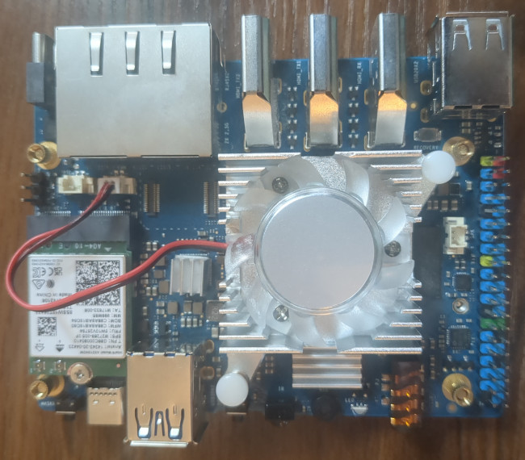

Xunlong Orange Pi 5 Plus (xunlong-orangepi5-plus)
|
 Orange Pi 5 Plus | |
| Manufacturer | Xunlong |
|---|---|
| Name | Orange Pi 5 Plus |
| Codename | xunlong-orangepi5-plus |
| Released | 2023 |
| Category | testing |
| Pre-built images | no |
| Original software | Linux |
| Original version | 5.10 |
| postmarketOS kernel | 6.10.0 |
| Hardware | |
| Chipset | Rockchip RK3588 |
| CPU | 4x 1.8 GHz Cortex-A55 & 4x 2.4Ghz Cortex-A76 |
| GPU | Mali-G610 |
| Storage | eMMC + microSD + NVMe |
| Memory | 4/8/16 GB |
| Architecture | AArch64 |
| Type | Single Board Computer |
{kind=link}
| USB Networking | |
|---|---|
| Flashing | |
| Touchscreen | |
| Display |
Partial
|
| WiFi |
Works
|
| FDE | |
| Mainline |
Works
|
| Battery | |
| 3D Acceleration |
Works
|
| Audio |
Broken
|
| Bluetooth |
Works
|
| Camera | |
| GPS | |
| Mobile data | |
| Internal storage |
Partial
|
| SMS | |
| Calls | |
| USB OTG | |
| NFC | |
| Accelerometer | |
|---|---|
| Magnetometer | |
| Ambient Light | |
| Proximity | |
| Hall Effect | |
| Barometer | |
| Power Sensor | |
| Built-in DVB | |
|---|---|
| Camera Flash | |
| Keyboard | |
| Touchpad | |
| USB-A |
Works
|
| HDMI/DP |
Partial
|
| Ir TX | |
| Ir RX |
Works
|
| Stylus | |
| Memory Card |
Broken
|
| Haptics | |
| Ethernet |
Works
|
| FOSS bootloader |
Works
|
Contributors
Users owning this device
- WeirdTreeThing (Notes: 16GB RAM, NVMe SSD, Intel AX210)
Installation
Follow the Installation guide, install to a USB drive (microSD is currently unsupported).
To install to internal storage, such as eMMC or NVMe, install and run pmbootstrap from pmOS on the SBC.
Note that the stock U-Boot that comes preloaded on this device is buggy and can't be used to boot pmOS. See the Alternate Firmware section below for instructions on installing custom firmware.
WiFi/Bluetooth
The M.2 E key slot on top is fully functional in pmOS. If your WiFi card requires firmware, you will need to install it.
Camera
MIPI cameras are untested.
eMMC/microSD
microSD is currently not working. eMMC is untested but likely to also not work.
Audio
Audio is currently broken, but likely can be fixed.
Display
The current display driver is buggy and often has micro-stutters and errors in kmsg, but it works well enough. HDMI audio is also broken.
HDMI output #1 (middle HDMI port) works.
HDMI output #2 (right HDMI port) is currently unsupported.
HDMI input (left HDMI port) is currently unsupported.
MIPI displays are untested.
UART
ttyS2 is the default UART interface used for kernel logs and a getty is spawned on it at boot. It is exposed on the board through a 3 pin header. The default baud rate is 1500000
{kind=link}
Alternate Firmware
Backing up stock firmware
Before attempting to replace the firmware, you should create backup on the stock u-boot.
Note that reading/writing the firmware will take a while.
sudo dd if=/dev/mtdblock0 of=stock-u-boot.bin
Copy this file somewhere safe in case you ever need to flash the stock bootloader back.
EDKII (UEFI)
EDKII is a full UEFI firmware that has been ported to several RK3588 boards. It is currently the only supported option to boot postmarketOS on the Orange Pi 5 Plus.
Follow the offical installation instructions for more info.
Upstream U-Boot
Collabora is working on upstream U-Boot support for RK3588 SBCs[1], but currently there is no support for the Orange Pi 5 Plus.
See also
- pmaports!5219 Initial merge request